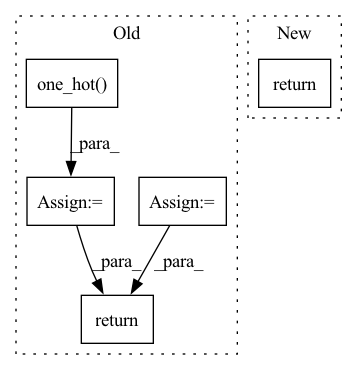

Pattern ID :19947

Before Change
if label_smoothing > 0:
confidence = 1 - label_smoothing
true_distribution = torch.nn.functional.one_hot(
targets, n_class
).float()
true_distribution = true_distribution * confidence + (
1 - true_distribution
) / (n_class - 2)
// discourage predition of <pad> by setting its corresponding dimention in true dristribution with 0
true_distribution[:, :, pad_idx] = 0
loss = functools.partial(torch.nn.functional.kl_div, reduction="none")
return compute_masked_loss(
loss, log_probabilities, true_distribution, length
)
else:
After Change
elif reduction == "batchmean":
return loss.sum() / bz
elif reduction == "sum":
return loss.sum()
else:
return loss
else:
In pattern: SUPERPATTERN
Frequency: 4
Non-data size: 5
Instances
Fragment ID: 64904924
Project Name: speechbrain/speechbrain
Commit Name: d5a377054abbdaa6618dd9f3561667ed469d7cb1
Time: 2020-08-23
Author: jzhong9@u.rochester.edu
File Name: speechbrain/nnet/losses.py
M Class Name: AnonimousClass
N Class Name: AnonimousClass
M Method Name: kldiv_loss(7)
N Method Name: kldiv_loss(7)
M Parent Class:
N Parent Class:
M File Name: speechbrain/nnet/losses.py
N File Name: speechbrain/nnet/losses.py
M Start Line: 483
M End Line: 513
N Start Line: 493
N End Line: 525
'>
Before Change
return preds, target
len_t = len(thresholds)
// num_samples x num_classes x num_thresholds
preds_t = (preds.unsqueeze(-1) >= thresholds.unsqueeze(0).unsqueeze(0)).long()
target_t = torch.nn.functional.one_hot(target, num_classes=num_classes)
unique_mapping = preds_t + 2 * target_t.unsqueeze(-1)
unique_mapping += 4 * torch.arange(num_classes, device=preds.device).unsqueeze(0).unsqueeze(-1)
unique_mapping += 4 * num_classes * torch.arange(len_t, device=preds.device)
bins = _bincount(unique_mapping.flatten(), minlength=4 * num_classes * len_t)
return bins.reshape(len_t, num_classes, 2, 2)
def _multiclass_precision_recall_curve_compute(
After Change
update_fn = _multiclass_precision_recall_curve_update_vectorized
else:
update_fn = _multiclass_precision_recall_curve_update_loop
return update_fn(preds, target, num_classes, thresholds)
def _multiclass_precision_recall_curve_update_vectorized(
'>
Fragment ID: 64904908
Project Name: pytorchlightning/metrics
Commit Name: 3df4e1b43347415af209c91df6aad3cd397519dd
Time: 2023-02-23
Author: Callidior@users.noreply.github.com
File Name: src/torchmetrics/functional/classification/precision_recall_curve.py
M Class Name: AnonimousClass
N Class Name: AnonimousClass
M Method Name: _multiclass_precision_recall_curve_update(4)
N Method Name: _multiclass_precision_recall_curve_update(4)
M Parent Class:
N Parent Class:
M File Name: src/torchmetrics/functional/classification/precision_recall_curve.py
N File Name: src/torchmetrics/functional/classification/precision_recall_curve.py
M Start Line: 412
M End Line: 420
N Start Line: 453
N End Line: 457
'>
Before Change
pass
else:
depth = output.shape[-1]
target = pd.fluid.layers.one_hot(target, depth=depth)
out = pd.fluid.layers.reduce_sum(
-(target * pd.log(output + epsilon) + (1. - target) * pd.log(1. - output + epsilon))
)
return out
def mean_squared_error(output, target, is_mean=False, axis=-1, name="mean_squared_error"):
After Change
False in pd.greater_equal(output, pd.to_tensor([0.0])).numpy():
raise Exception("all elements of input should be between 0 and 1")
epsilon = 3.6e-44
cal_loss = -(target * pd.log(output + epsilon) + (1. - target) * pd.log(1. - output + epsilon))
if reduction == "mean":
return pd.mean(cal_loss)
elif reduction == "sum":
return pd.sum(cal_loss)
elif reduction == "none":
return cal_loss
else:
'>
Fragment ID: 64904904
Project Name: tensorlayer/tensorlayerx
Commit Name: 21bf2328ccadff5a24520c774d17bfd6d5e05fa4
Time: 2022-01-26
Author: laicheng_vip@163.com
File Name: tensorlayerx/losses/paddle_cost.py
M Class Name: AnonimousClass
N Class Name: AnonimousClass
M Method Name: binary_cross_entropy(3)
N Method Name: binary_cross_entropy(3)
M Parent Class:
N Parent Class:
M File Name: tensorlayerx/losses/paddle_cost.py
N File Name: tensorlayerx/losses/paddle_cost.py
M Start Line: 100
M End Line: 108
N Start Line: 87
N End Line: 103